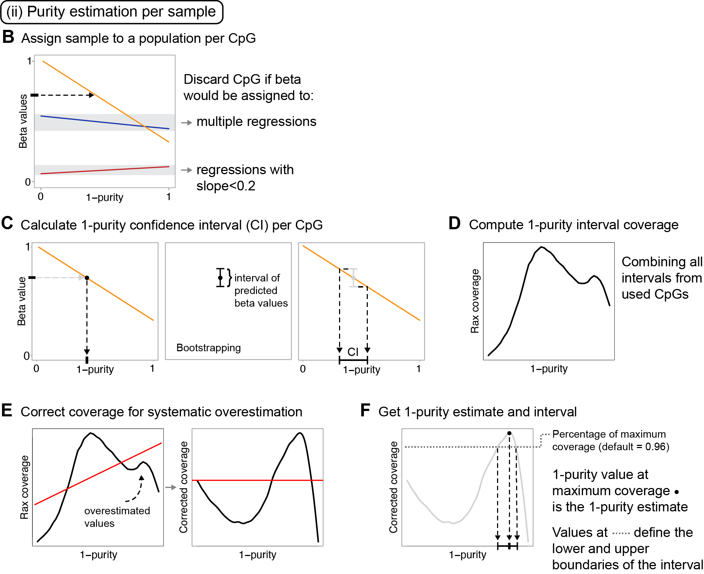
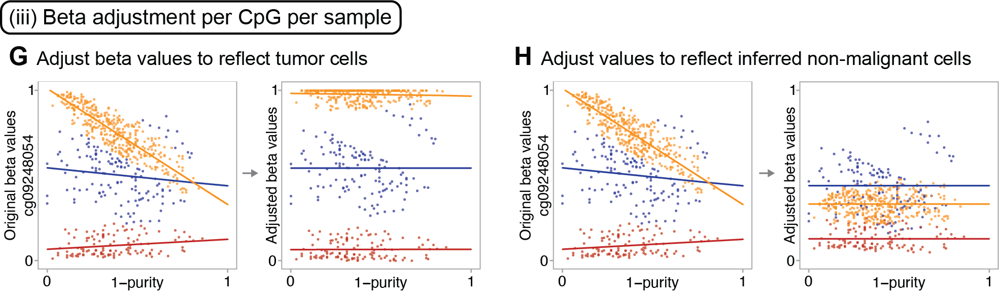

Method for calculating tumor purity and adjusting Illumina 450/850K DNA methylation beta values. This work has been described in the article “Tumor purity estimated from bulk DNA methylation can be used for adjusting beta values of individual samples to better reflect tumor biology” published by Sasiain, Nacer et al. in JOURNAL.
How to install
# Install devtools if you don't have it yet
install.packages("devtools")
# Load the library
library(devtools)
# Install and load PureBeta
install_github("StaafLab/PureBeta")
library(PureBeta)
# Updating the default timeout to 1000
options(timeout = 1000)Summary
Solid tumors are complex mixtures of tumor cells and non-malignant cells such as leukocytes and non-immune stromal cells. Consequently, DNA methylation data estimated from tumor samples are a mixture of signals obtained from the malignant and non-malignant sections of the tumor. Here we present PureBeta, an R package that allows for the adjustment of DNA methylation beta values to account for the effect of sample composition. This package allows for the correction of complete cohorts of samples with known sample purities and CpG beta values, and for the estimation of sample purity and subsequent beta correction using reference data and uncorrected beta values of data sets (or single samples) without known sample purities.
Framework
The PureBeta package is divided into four main functions described below. For more information such as parameters, click on "Reference" at the top of this page and then on the function name.
Correction of beta values from a cohort with known sample purities: The function beta_correction_for_cohorts() performs beta value adjustment for tumor sample composition based on the original Staaf & Aine beta correction approch, correcting betas from a cohort of samples with known sample purities. More information about this approach can be found in the original publication: Staaf & Aine, PLosOne, 2022.
Creation of reference data from a cohort: in the reference_regressions_generator() function, reference linear regressions are calculated based on DNA methylation beta values and tumor purity estimates of a cohort. Each regression represents a sample population as shown in the figure below.
- Estimation of tumor purities for individual samples: in the purity_estimation() function, CpGs are first filtered based on beta variance removing those considered to be non-informatoive. Each CpG is then processed individually obtaining a sample purity interval. Finally, all the obtained intervals per sample are integrated generating a purity estimate for the sample.

- Adjustment of beta values per CpG and sample: in the reference_based_beta_correction() function, beta values are adjusted for sample composition using reference regressions and estimated purities. This can be peformed following two approaches: refitting the regressions to include the new data points (betas to correct + estimated purities) or using the original reference regressions. Unlike beta_correction_for_cohorts(), this function does not require the usage of a full cohort of samples, as it is applicable to a single sample and single CpG. DNA methylation beta values and estimated purities for TCGA BRCA, LUAD, and LUSC samples are available on FigShare for the refitting approach.

Data
This package includes precomputed reference regressions that model the correlation between DNA methylation beta values and sample purities obtained from The Cancer Genome Atlas for three different cancer types:
- Breast Cancer (BRCA)
- Lung Adenocarcinoma (LUAD)
- Lung Squamous Cell Carcinoma (LUSC)
Due to size limitations these files do not include all the parameters needed to run the bootstrapping based purity estimation. Those files ara available in FigShare
Additionally, it includes small example datasets (purities and original beta values of a reference set with less samples, and original betas from a larger cohort) obtained from the 5000 most variable CpGs in the TCGA BRCA data set to test the execution of the package’s functions.